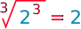
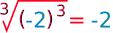
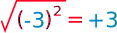
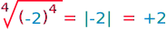

nth Root
The "nth Root" used n times in a multiplication gives the original value
" nth ? "
1st, 2nd, 3rd, 4th, 5th, ... nth ...
Instead of talking about the "4th", "16th", etc, we can just say the "nth ".
The nth Root
- The "2nd" root is the square root
- The "3rd" root is the cube root
- etc!
| 2 | √a × √a = a | The square root used two times in a multiplication gives the original value. | ||
| 3 | 3√a × 3√a × 3√a = a | The cube root used three times in a multiplication gives the original value. | ||
| n |
n√a
×
n√a
×
...
×
n√a
= a (n of them) |
The nth root used n times in a multiplication gives the original value. |
So it is the general way of talking about roots
(so it could be 2nd, or 9th, or 324th, or whatever)
The nth Root Symbol

This is the special symbol that means "nth root", it is the "radical" symbol (used for square roots) with a little n to mean nth root.
Using it
We could use the nth root in a question like this:
Question: What is "n" in this equation?
n√625 = 5
Answer: I just happen to know that 625 = 54 , so the 4th root of 625 must be 5:
4√625 = 5
Or we could use "n" because we want to say general things:
Example: When n is odd then n√an = a (we talk about this later).
Why "Root" ... ?
 |
When you see "root" think "I know the tree, but what is the root that produced it? " Example: in √9 = 3 the "tree" is 9 , and the root is 3 . |
Properties
Now we know what an nth root is, let us look at some properties:
Multiplication and Division
We can "pull apart" multiplications under the root sign like this:
n√ab =
n√a
×
n√b
(Note: if n is even then a and b must both be ≥ 0)
This can help us simplify equations in algebra, and also make some calculations easier:
Example:
3√128 = 3√64×2 = 3√64 × 3√2 = 43√2
So the cube root of 128 simplifies to 4 times the cube root of 2.
It also works for division:
n√a/b =
n√a
/
n√b
(a≥0 and b>0)
Note that b cannot be zero, as we can't divide by zero
Example:
3√1/64 = 3√1 / 3√64 = 1/4
So the cube root of 1/64 simplifies to just one quarter.
Addition and Subtraction
But we cannot do that kind of thing for additions or subtractions!
 n√a + b
≠
n√a +
n√b
n√a + b
≠
n√a +
n√b
 n√a − b
≠
n√a −
n√b
n√a − b
≠
n√a −
n√b
 n√an + bn
≠ a + b
n√an + bn
≠ a + b
Example: Pythagoras' Theorem says
 |
a2 + b2 = c2 |
So we calculate c like this:
c = √a2 + b2
Which is not the same as c = a + b , right?
It is an easy trap to fall into, so beware.
It also means that, unfortunately, additions and subtractions can be hard to deal with when under a root sign.
Exponents vs Roots
An exponent on one side of "=" can be turned into a root on the other side of "=":
If an = b then a = n√b
Note: when n is even then b must be ≥ 0
Example:
54 = 625 so 5 = 4√625
nth Root of a-to-the-nth-Power
When a value has an exponent of n and we take the nth root we get the value back again ...
|
... when a is positive (or zero): |
(when a ≥ 0 ) |
Example: 
|
... or when the exponent is odd : |
(when n is odd ) |
Example:
... but when a is negative and the exponent is even we get this:

Did you see that −3 became +3 ?
| ... so we must do this: | (when a < 0 and n is even ) |
The |a| means the absolute value of a, in other words any negative becomes a positive.
Example:
So that is something to be careful of! Read more at Exponents of Negative Numbers
Here it is in a little table:
| n is odd | n is even | |
|---|---|---|
| a ≥ 0 | ||
| a < 0 |
nth Root of a-to-the-mth-Power
What happens when the exponent and root are different values (m and n)?
Well, we are allowed to change the order like this:
n√am = (n√a )m
So this: nth root of (a to the power m)
becomes (nth root of a) to the power m
Example:
3√272 =
(3√27 )2
= 32
= 9
Easier than squaring 27 then taking a cube root, right?
But there is an even more powerful method ... we can combine the exponent and root to make a new exponent, like this:
n√am = amn
The new exponent is the fraction mn which may be easier to solve.
Example:
3√46
= 463
= 42
= 16
n√a = a1n
Example:
2√9 = 912 = 3
You might like to read about Fractional Exponents to find out why!